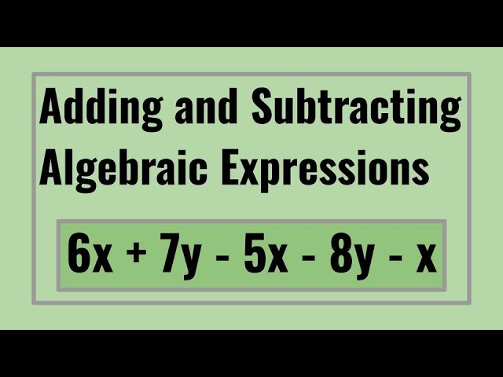
FEATURED VIDEO
How to Add and Subtract Algebraic Terms (Simplifying)
This tutorial explains how to add and subtract algebraic terms by combining like terms, including examples with positive and negative terms and distribution.

This tutorial explains how to add and subtract algebraic terms by combining like terms, including examples with positive and negative terms and distribution.
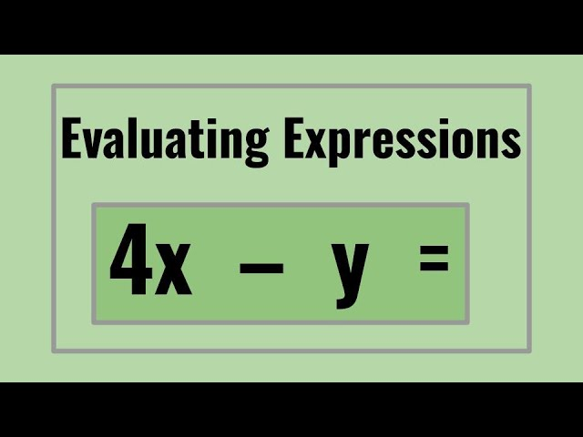
Learn how to evaluate algebraic expressions by substituting values for variables. This video walks through simple to more complex expressions using step-by-step examples.
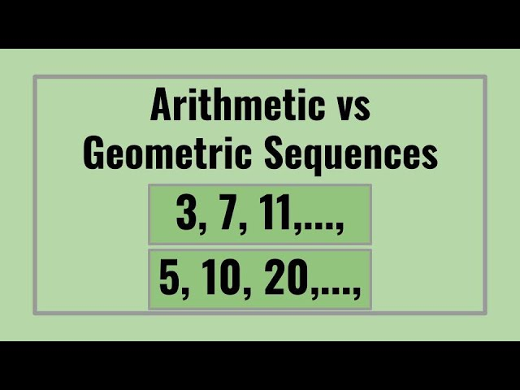
Learn how to find the pattern in a sequence. This video explains the difference between arithmetic sequences with a common difference and geometric sequences with a common ratio.
This tutorial explains how to add and subtract algebraic terms by combining like terms, including examples with positive and negative terms and distribution.
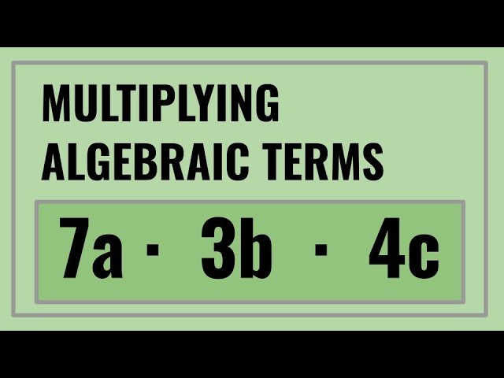
Learn how to multiply algebraic terms, including numerical coefficients and variables. The tutorial also covers exponents with the same base.
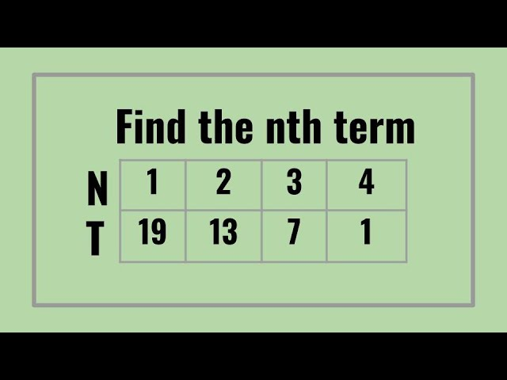
This tutorial shows how to write algebraic expressions to describe sequences, focusing on linear patterns and turning number sequences into nth-term formulas.
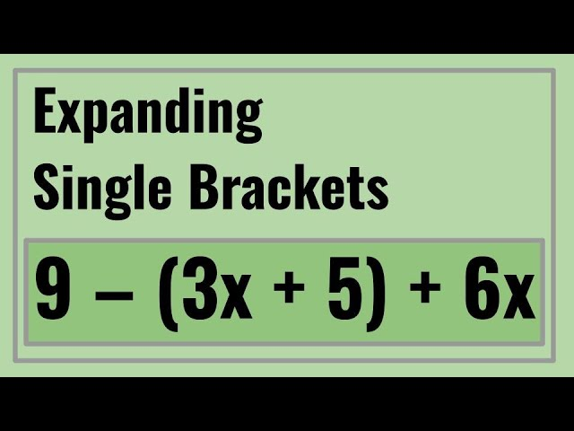
Learn how to expand expressions using the distributive property. This tutorial explains how to remove brackets and simplify algebraic expressions.
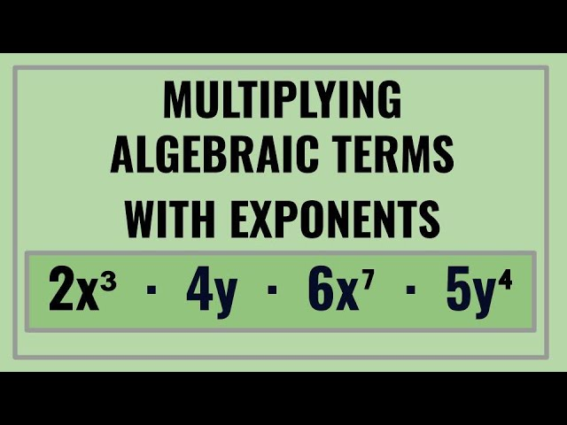
This tutorial covers multiplying powers with the same base using exponent rules, including how to apply the product-of-powers rule and simplify expressions.
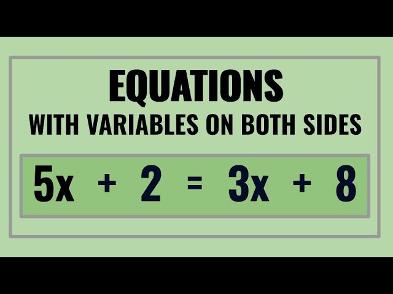
This video explains how to solve equations where variables appear on both sides of the equal sign, using step-by-step examples to isolate and simplify terms.
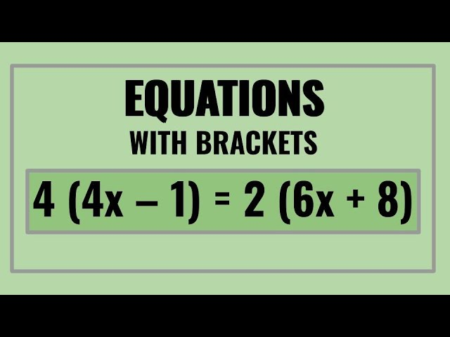
This tutorial explains how to solve equations involving brackets by distributing, combining like terms, and isolating the variable.
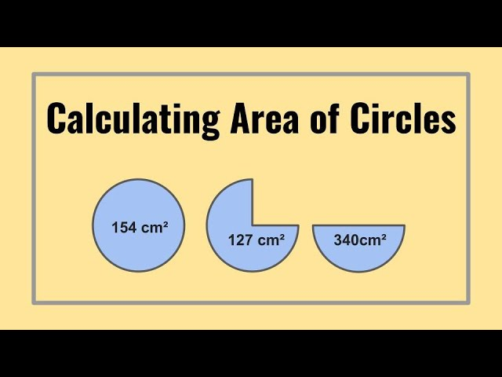
Learn how to find the area of full circles, half circles, and three-fourths of a circle using the correct formula and clear visuals.
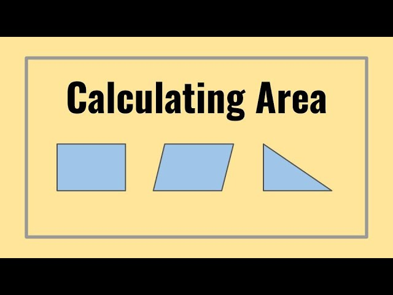
This tutorial walks you through how to calculate the area of rectangles, parallelograms, and triangles—all in one video!
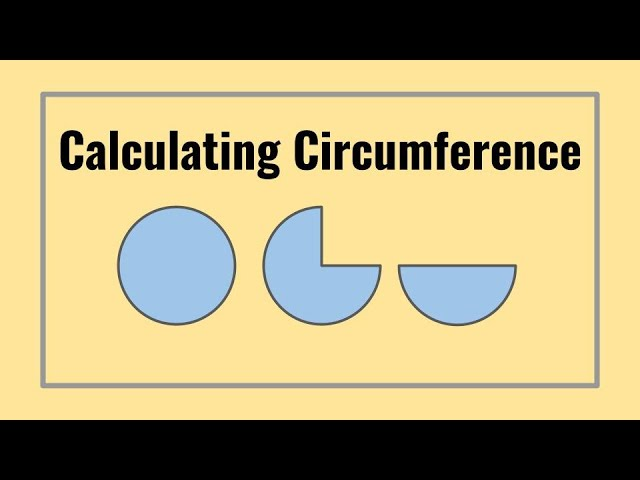
Learn how to calculate the circumference of a full circle, half circle, and three-fourths of a circle using visual diagrams and step-by-step examples.
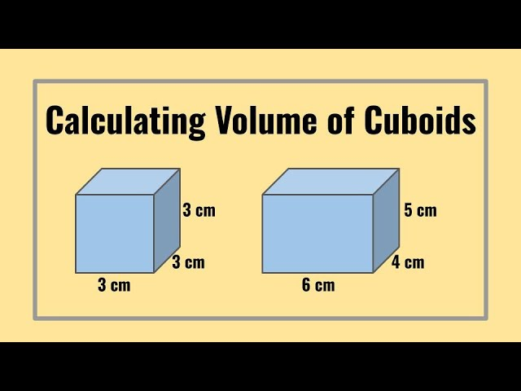
This tutorial shows how to calculate the volume of cuboids using the volume = length × width × height formula, with real examples and clear visuals.
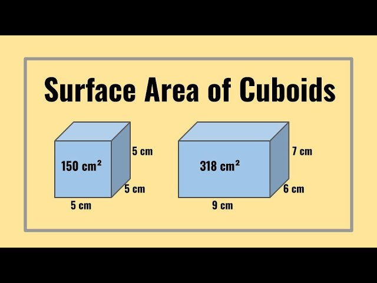
Learn how to calculate the surface area of cuboids step by step. We’ll break it down face-by-face with diagrams to help visualize and organize the process.
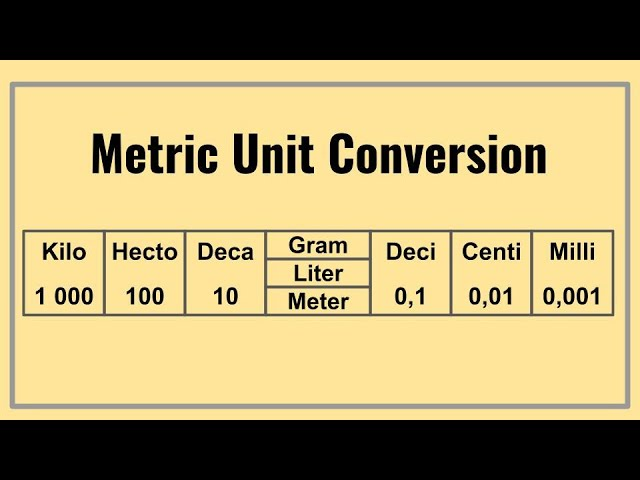
Convert between metric units like millimeters, centimeters, meters, and kilometers with ease using this visual tutorial.
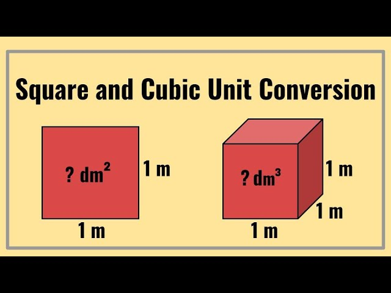
This tutorial explains how to convert between square and cubic units—including cm² to m² and cm³ to m³—using diagrams and examples.
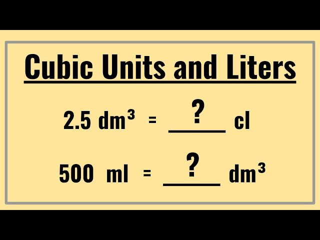
This tutorial shows how to convert between cubic units (like cm³ and m³) and liters. You’ll learn conversion factors, when to multiply or divide, and how to approach real-world questions.
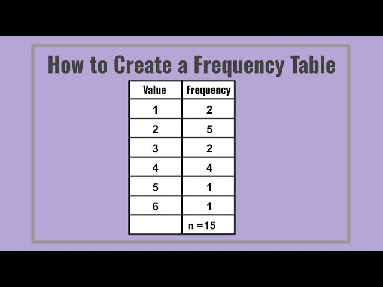
Learn how to organize data using a frequency table in this step-by-step tutorial. You’ll see how to group data, count frequencies, and structure your results clearly.
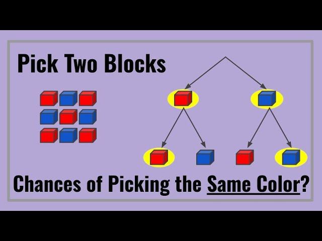
How do you calculate the probability of selecting two blocks of the same color? This tutorial breaks it down using visual examples and simple logic.
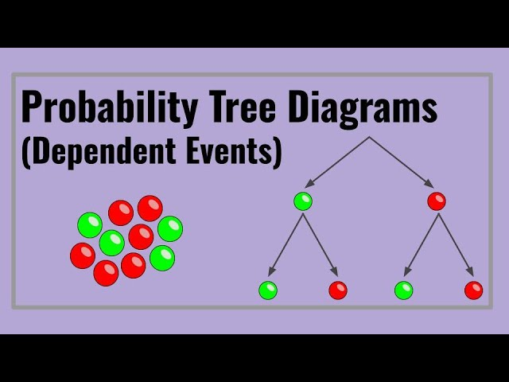
Learn how to calculate the probability of dependent events using a tree diagram. This tutorial walks through how outcomes change when one event affects another.
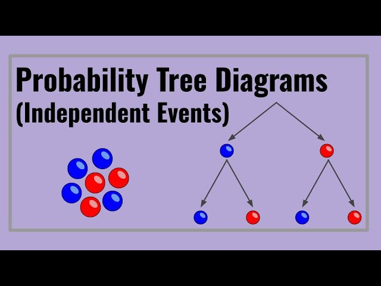
In this tutorial, you’ll learn how to calculate the probability of independent events using a tree diagram.

This tutorial explains how to calculate expected frequency based on probability and sample sizes. We walk through several real-life examples to help solidify the concept.
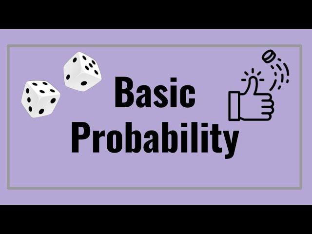
This intro-level tutorial walks through the basics of probability using clear examples and helpful visuals.

Learn how to divide fractions by flipping the second fraction and multiplying — a method known as “keep-change-flip.” This tutorial walks you through several clear examples with simplified answers.

This tutorial shows how to multiply two fractions together, step by step. Learn how to multiply numerators and denominators, then reduce your answer.

This tutorial walks you through converting improper fractions into mixed numbers. Learn how to divide, write your whole number, and show the remaining fraction properly.
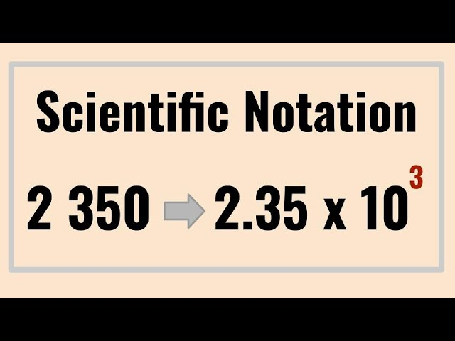
This tutorial introduces scientific notation — what it is, how to write it, and why it’s useful. Learn how to convert large and small numbers into scientific form using powers of 10.
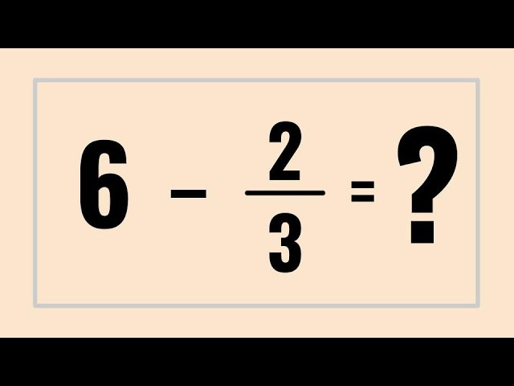
Learn how to combine whole numbers and fractions in addition and subtraction problems. This video shows how to line up the values, find common denominators, and simplify the results.
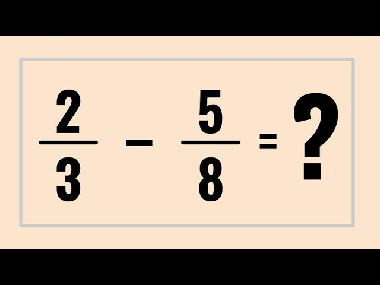
This tutorial walks you through finding common denominators, converting fractions, and solving accurately. Includes multiple examples of both addition and subtraction with unlike denominators.
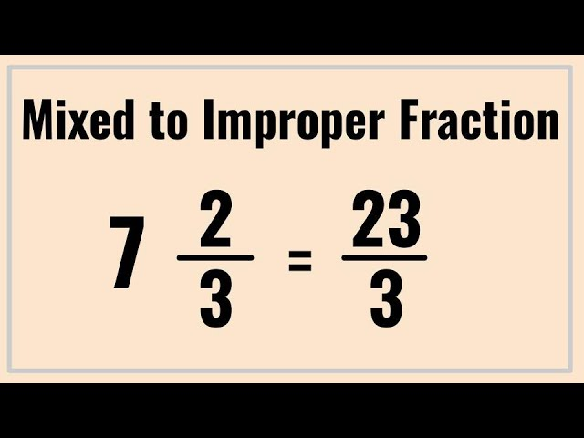
This video teaches how to turn a mixed number into an improper fraction. Learn the “multiply-add” method and apply it to multiple examples.
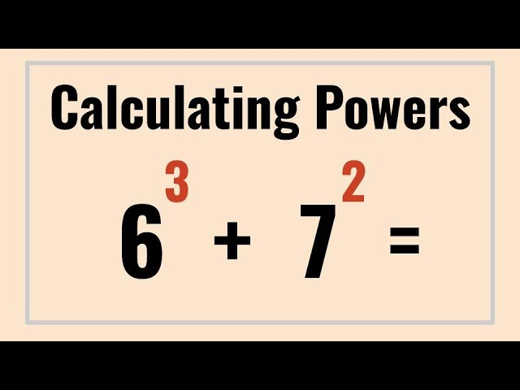
Learn what powers are and how to calculate them! This tutorial explains exponents clearly, including base numbers, squaring, cubing, and evaluating powers.
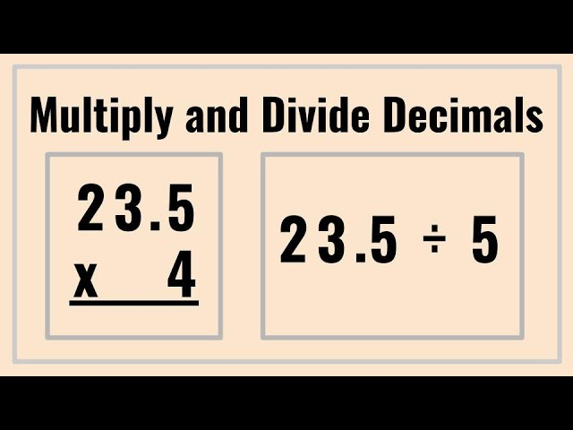
Learn how to multiply and divide decimal numbers by whole numbers using clear steps and place value strategies. This tutorial includes helpful visual models and examples to build confidence.
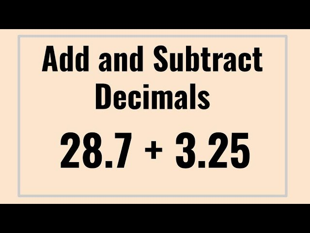
This tutorial shows how to add and subtract decimals using place value alignment. Perfect for helping students understand the importance of lining up decimal points.
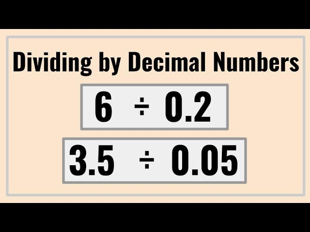
Learn how to divide numbers by decimal values in this easy-to-follow lesson. We cover how to shift the decimal point and rewrite the problem for clarity.
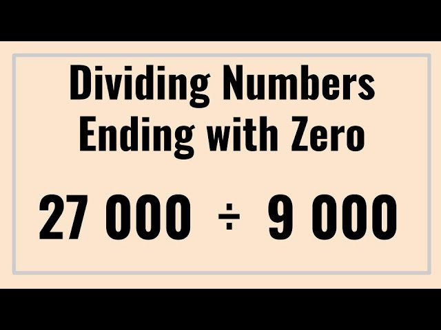
This tutorial explains how to divide large numbers that end in one or more zeros. You’ll learn how to simplify quickly using mental math and place value understanding.
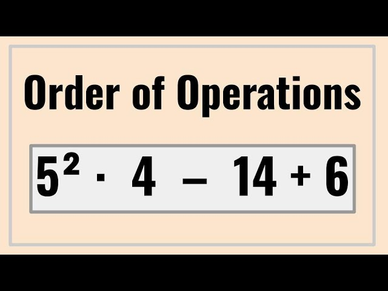
Learn how to solve expressions using the order of operations (PEMDAS/BEDMAS). This tutorial includes brackets, exponents, and multiple-step examples.
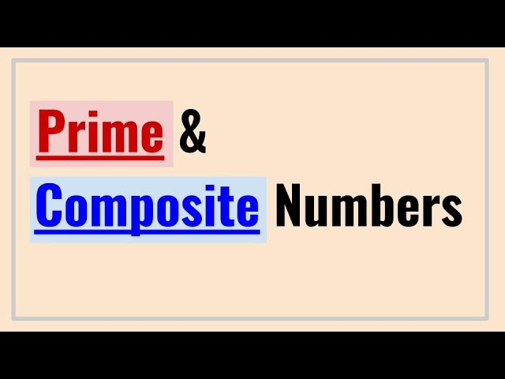
Pause at the start and try it yourself — then see the answer unfold step by step through visual animation.
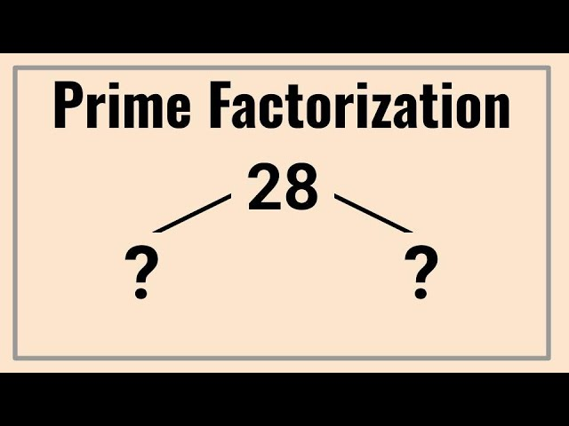
Learn how to find the prime factorization of any composite number using factor trees and division methods.
Test your skills with multiplying algebraic terms involving variables, coefficients, and exponents. Keep track of your score and see how many you can solve correctly.
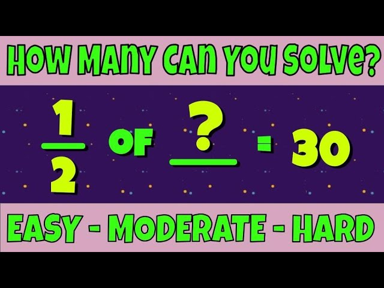
Challenge yourself to simplify algebraic expressions by identifying and combining like terms. Keep track of your score as you work through each question.
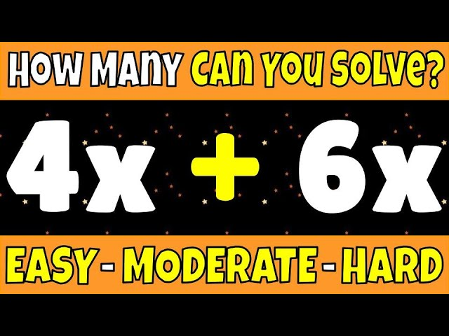
Test your understanding of fractions, percentages, and finding the whole from a given part. Keep track of your score and see how many questions you can answer correctly.
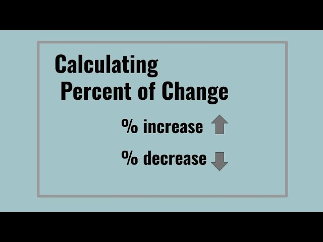
Learn how to calculate percent of change by comparing the original value and the new value. This tutorial walks through percent increase and percent decrease using real-life examples.
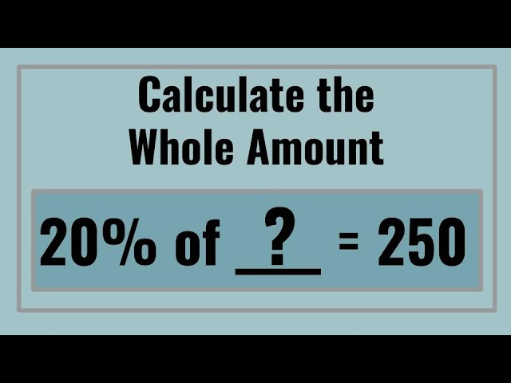
This tutorial shows how to calculate the whole amount when given the percent and the part. You’ll learn the formula and how to apply it step by step with visual support.
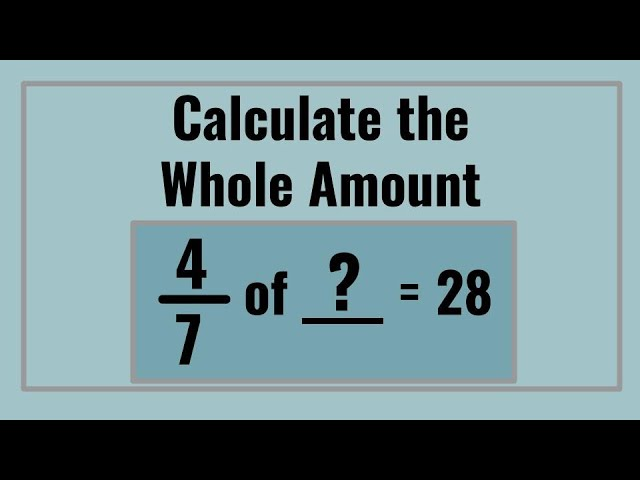
Learn how to calculate the total amount when given a part and a fraction of the whole. This method is essential in proportional reasoning and everyday problem solving.
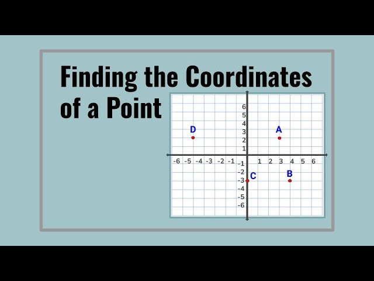
This tutorial teaches how to identify and plot the coordinates of a point on a coordinate grid. You’ll learn how to read x- and y-values and understand quadrants through visual examples.
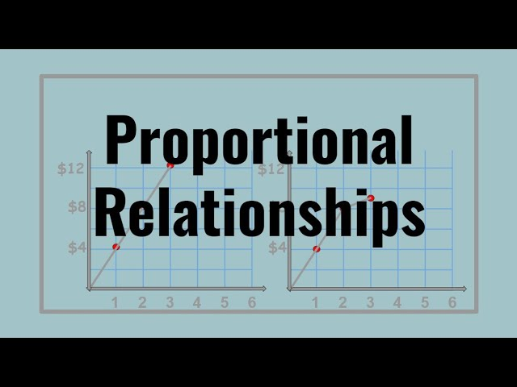
Learn how to identify proportional relationships from tables, graphs, and equations. This tutorial breaks down how to tell if two quantities increase at a constant rate.
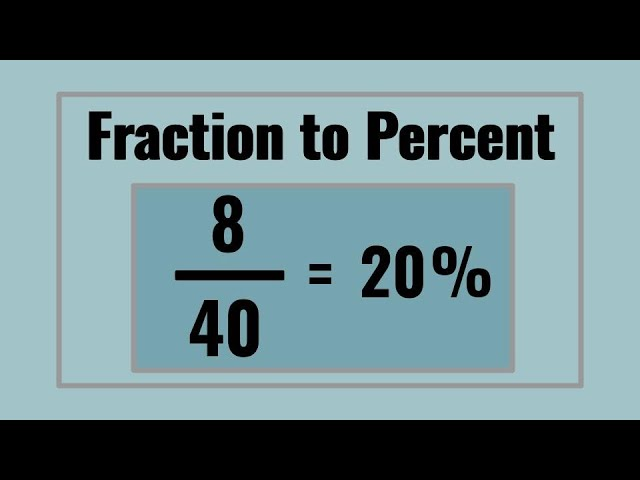
This video shows how to convert fractions to percents both with and without a calculator, using clear examples and step-by-step methods.
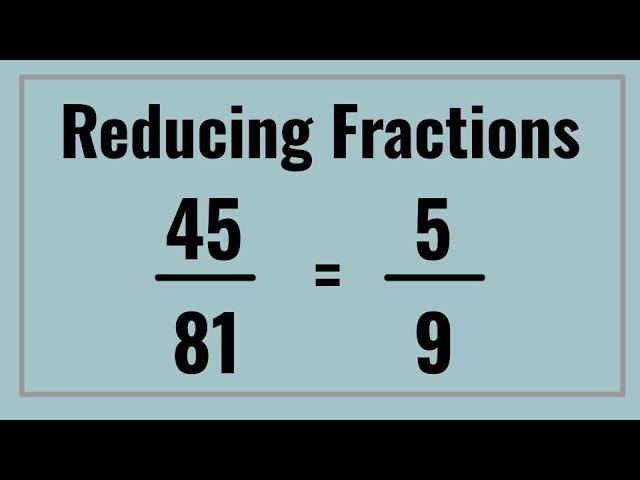
Learn how to reduce fractions to their simplest form using a factor tree diagram. This step-by-step tutorial helps visualize how to break down and simplify any fraction.
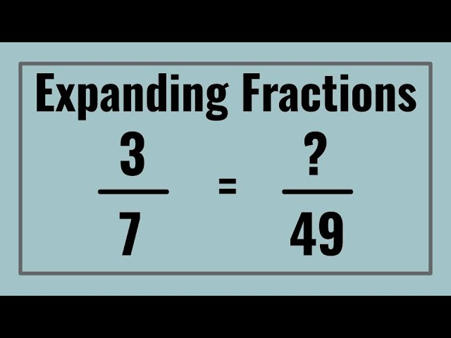
This tutorial explains how to expand fractions using equivalent values. You’ll see how to multiply both the numerator and denominator to scale a fraction up.
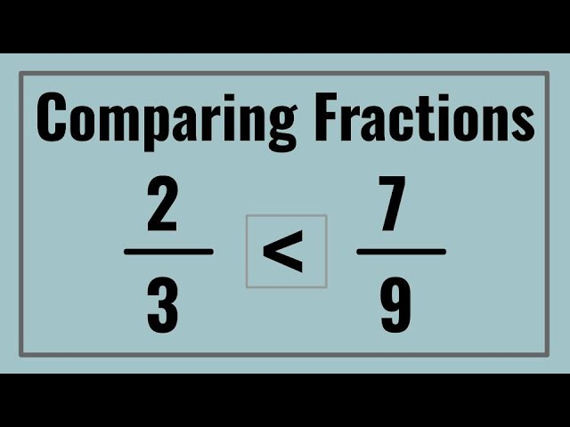
Need to compare two fractions fast? This tutorial shows a quick and effective way to compare fractions visually and mentally—no cross-multiplying needed.
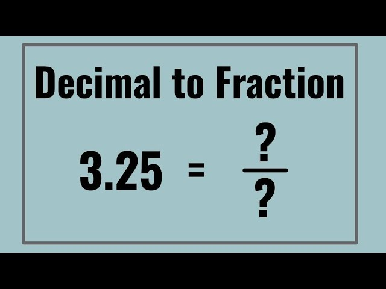
This tutorial teaches how to convert decimals into fractions using place value and simplification. You’ll learn how to read decimals, write them as fractions, and reduce them clearly.